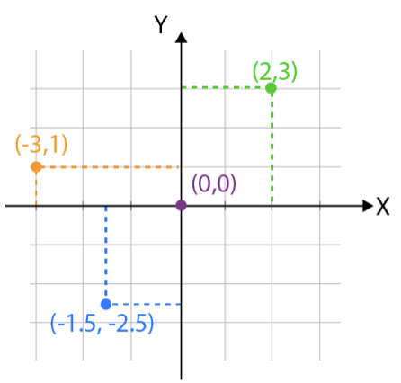
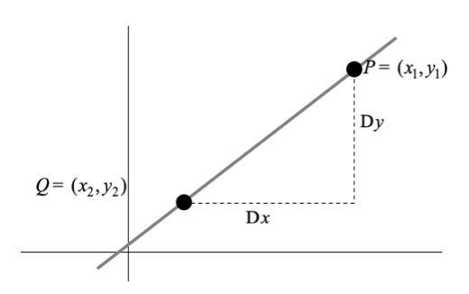
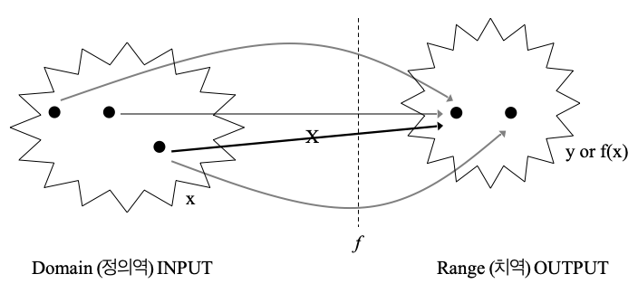
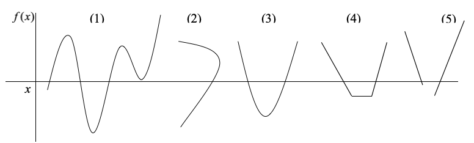

수학의 기초 | 1. 함수
1 기초
1.1 함수와 통계학
함수는 통계학에서 데이터를 설명하고 모델링하는 핵심 수단이다. 데이터 간의 관계를 수학적으로 표현하고, 확률분포·추정·검정 등 다양한 통계 기법의 기반이 된다.
| 개념 | 표현 | 설명 |
|---|---|---|
| 통계함수 | \(y = f(x) + \varepsilon\) | 독립변수 \(x\)와 종속변수 \(y\) 사이의 관계, \(\varepsilon\)은 오차항 |
| 확률밀도함수 | \(p(x)\) | 확률변수의 상대적 발생 가능성을 나타내는 함수 |
| 기댓값 | \(E(X) = \sum x\, p(x)\) | 확률변수의 가중평균 (장기 평균값) |
1.2 함수와 시리즈
시리즈(급수)는 복잡한 함수를 다항식으로 근사하거나, 함수의 특성을 분석하는 데 사용된다.
\[S_{n} = \sum_{k=1}^{n} a_k \qquad S_{\infty} = \sum_{k=1}^{\infty} a_k\]
이항시리즈 (Binomial Series)
\[(a + b)^{n} = \sum_{k=0}^{n} \binom{n}{k} a^{n-k} b^{k}\]
\[\frac{1}{1 + x} = 1 - x + x^{2} - x^{3} + \cdots\]
\[\frac{1}{(1 + x)^{2}} = 1 - 2x + 3x^{2} - 4x^{3} + \cdots\]
지수시리즈 (Exponential Series)
\[e^{x} = 1 + x + \frac{x^{2}}{2!} + \frac{x^{3}}{3!} + \cdots = \lim_{n \to \infty}\left(1 + \frac{x}{n}\right)^{n}\]
\[\ln(1 + x) = x - \frac{x^{2}}{2} + \frac{x^{3}}{3} - \frac{x^{4}}{4} + \cdots, \quad -1 < x \leq 1\]
산술시리즈 (Arithmetic Series)
\[S_{n} = a + (a + d) + (a + 2d) + \cdots + [a + (n-1)d]\]
- \(a\): 첫째 항, \(d\): 공차, \(n\): 항의 개수
\[S_{n} = \frac{n}{2}[2a + (n-1)d]\]
기하시리즈 (Geometric Series)
\[S_{n} = a + ar + ar^{2} + \cdots + ar^{n-1} = \frac{a(1 - r^{n})}{1 - r}, \quad r \neq 1\]
- \(a\): 첫째 항, \(r\): 공비
\[S_{\infty} = \frac{a}{1 - r}, \quad -1 < r < 1\]
1.3 통계학 주요 상수
| 상수 | 값 | 의미 |
|---|---|---|
| 자연상수 \(e\) | \(\approx 2.71828\ldots\) | 자연로그의 밑; 정규분포·포아송분포의 핵심 항 |
| \(\ln 2\) | \(\approx 0.69315\ldots\) | 정보 이론에서 1비트의 정보량 |
| 황금비 \(\phi\) | \(\approx 1.61803\ldots\) | \(\phi = \dfrac{1+\sqrt{5}}{2}\); \(a/b = (a+b)/a\) 만족 |
| 오일러 상수 \(\gamma\) | \(\approx 0.57722\ldots\) | \(\gamma = \lim_{n\to\infty}\left(\sum_{k=1}^{n}\dfrac{1}{k} - \ln n\right)\) |
1.3.1 그리스 문자 기호표
| 소문자 | 대문자 | 발음 | 소문자 | 대문자 | 발음 |
|---|---|---|---|---|---|
| \(\alpha\) | \(A\) | alpha | \(\nu\) | \(N\) | nu |
| \(\beta\) | \(B\) | beta | \(\xi\) | \(\Xi\) | xi (ksi) |
| \(\gamma\) | \(\Gamma\) | gamma | \(o\) | \(O\) | omicron |
| \(\delta\) | \(\Delta\) | delta | \(\pi\) | \(\Pi\) | pi |
| \(\varepsilon\) | \(E\) | epsilon | \(\rho\) | \(P\) | rho |
| \(\zeta\) | \(Z\) | zeta | \(\sigma\) | \(\Sigma\) | sigma |
| \(\eta\) | \(H\) | eta | \(\tau\) | \(T\) | tau |
| \(\theta\) | \(\Theta\) | theta | \(\upsilon\) | \(\Upsilon\) | upsilon |
| \(\iota\) | \(I\) | iota | \(\phi\) | \(\Phi\) | phi |
| \(\kappa\) | \(K\) | kappa | \(\chi\) | \(X\) | chi |
| \(\lambda\) | \(\Lambda\) | lambda | \(\psi\) | \(\Psi\) | psi |
| \(\mu\) | \(M\) | mu | \(\omega\) | \(\Omega\) | omega |
2 좌표와 직선방정식
2.1 이차원 평면과 데카르트 좌표

이차원 평면에서 모든 점은 두 좌표 \((a, b)\)로 표현된다. 수평의 \(x\)-축과 수직의 \(y\)-축이 원점에서 직각으로 교차하며, 원점에서 \(x\)-축 방향으로 \(a\), \(y\)-축 방향으로 \(b\)만큼 떨어진 점이 \((a, b)\)이다.
이 표기법을 데카르트(Cartesian) 좌표계라 하며, 점·선·곡선·기하학적 형태를 방정식으로 표현하는 기반이 된다.
2.2 직선과 증가
2.2.1 증가량 (Increment)

두 점 \((x_1, y_1)\)과 \((x_2, y_2)\) 사이의 좌표 변화량을 증가량이라 한다.
\[\Delta x = x_2 - x_1, \qquad \Delta y = y_2 - y_1\]
2.2.2 기울기 (Slope)
\[m = \frac{\Delta y}{\Delta x} = \frac{y_2 - y_1}{x_2 - x_1}, \quad \Delta x \neq 0\]
| 조건 | 의미 |
|---|---|
| \(m > 0\) | 오른쪽으로 올라간다 |
| \(m < 0\) | 오른쪽으로 내려간다 |
| \(m = 0\) | 수평선 |
| \(m\) 미정의 (\(\Delta x = 0\)) | 수직선 |
2.2.3 평행과 수직
- 평행: \(m_1 = m_2\) → 두 직선은 교차하지 않는다.
- 수직: \(m_1 \cdot m_2 = -1\) → 두 직선은 \(90°\) 각도로 교차한다.
2.3 직선 방정식 (Linear Equation)
직선의 일반 형태: \(y = bx + a\)
- \(b\): 기울기 (slope), \(a\): \(y\)절편 (intercept)
| 유형 | 방정식 | 조건 |
|---|---|---|
| 일반 직선 | \(y = bx + a\) | \(b \neq 0\) |
| 수평선 | \(y = a\) | \(b = 0\); \(x\)-축과 평행 |
| 수직선 | \(x = c\) | 기울기 미정의; \(y\)-축과 평행 |
3 함수란?
3.1 함수 정의
함수 \(f: X \to Y\)는 정의역 \(X\)의 각 원소 \(x\)에 대해 공역 \(Y\)의 원소 \(y\)를 정확히 하나 대응시키는 규칙이다.
\[y = f(x)\]
“\(y\)는 \(x\)의 함수이다”라고 읽는다.

- 정의역 (domain): 함수 \(f(x)\)가 유효하게 정의되는 모든 입력값 \(x\)의 집합
- 치역 (range): 정의역의 원소를 \(f\)에 대입했을 때 나오는 출력값 \(y\)의 집합
- 대응 규칙: 정의역의 한 \(x\)값에 치역의 값이 정확히 하나여야 한다
아래 그림에서 (2)번은 동일한 \(x\)값에 2개의 \(y\)값이 대응되므로 함수가 아니다. 나머지는 모두 함수이다.

3.2 우함수와 기함수
우함수 (Even Function)
\[f(-x) = f(x), \quad \forall x \in \text{정의역}\]
- \(y\)-축 대칭
- 예: \(f(x) = x^2\), \(\cos(x)\)
기함수 (Odd Function)
\[f(-x) = -f(x), \quad \forall x \in \text{정의역}\]
- 원점 대칭
- 예: \(f(x) = x^3\), \(\sin(x)\)
3.3 함수 종류
3.3.1 합성함수 (Composite Function)
두 함수 \(f\)와 \(g\)가 있을 때, \(g(x)\)의 출력을 \(f\)의 입력으로 사용하는 새로운 함수이다.
\[(f \circ g)(x) = f(g(x))\]
- \(g(x)\): 먼저 적용되는 함수
- \(f(x)\): \(g(x)\)의 출력을 받는 함수
- 정의역: \(x \in \text{dom}(g)\) 이고 \(g(x) \in \text{dom}(f)\)인 집합
\(f(x) = 2x + 1\), \(g(x) = x^2\)일 때,
\[f(g(x)) = f(x^2) = 2x^2 + 1\] \[g(f(x)) = g(2x+1) = (2x+1)^2\]
\(f \circ g \neq g \circ f\) — 합성 순서가 중요하다.
3.3.2 절대값 함수
\[|x| = \begin{cases} x, & x \geq 0 \\ -x, & x < 0 \end{cases}\]
\(|x|\)는 수직선 위에서 \(x\)와 원점 사이의 거리를 나타낸다. 결과는 항상 \(\geq 0\)이다.
3.3.3 바닥함수 (Floor Function)
\[\lfloor x \rfloor = \text{최대 정수 } n, \quad n \leq x\]
- \(\lfloor 2.7 \rfloor = 2\), \(\lfloor -1.3 \rfloor = -2\)
- \(n \leq x < n+1\)을 항상 만족
3.4 함수의 사칙연산
두 함수 \(f(x)\), \(g(x)\)의 연산은 각 점에서 함수값에 대해 수행된다.
| 연산 | 정의 | 정의역 조건 |
|---|---|---|
| 덧셈/뺄셈 | \((f \pm g)(x) = f(x) \pm g(x)\) | \(f\), \(g\) 동시 정의 구간 |
| 곱셈 | \((f \cdot g)(x) = f(x) \cdot g(x)\) | \(f\), \(g\) 동시 정의 구간 |
| 나눗셈 | \(\left(\dfrac{f}{g}\right)(x) = \dfrac{f(x)}{g(x)}\) | \(f\), \(g\) 동시 정의 + \(g(x) \neq 0\) |
4 함수의 응용 및 극한
4.1 함수의 통계 응용
| 분야 | 핵심 함수 | 용도 |
|---|---|---|
| 확률밀도함수 (PDF) | \(f(x) \geq 0\), \(\int_{-\infty}^{\infty} f(x)\,dx = 1\) | 연속형 확률변수의 분포 |
| 누적분포함수 (CDF) | \(F(x) = P(X \leq x) = \int_{-\infty}^{x} f(t)\,dt\) | 확률 계산, 분위수 결정 |
| 회귀모형 | \(y = \beta_0 + \beta_1 x + \varepsilon\) | 변수 간 관계 모델링 |
| 생존함수 | \(S(t) = P(T > t) = 1 - F(t)\) | 생존 확률 분석 |
| 위험함수 | \(h(t) = f(t)/S(t)\) | 순간 사건 발생 위험률 |
| 자기회귀 | \(X_t = \phi_1 X_{t-1} + \phi_2 X_{t-2} + \cdots + \varepsilon_t\) | 시계열 예측 |
\[f(x) = \frac{1}{\sqrt{2\pi\sigma^{2}}}\, e^{-\frac{(x-\mu)^{2}}{2\sigma^{2}}}\]
구간 \([a, b]\)의 확률: \(P(a \leq X \leq b) = \int_{a}^{b} f(x)\,dx\)
4.2 함수의 극한
4.2.1 극한의 정의
\(x\)가 \(a\)에 가까워질 때 \(f(x)\)가 특정 값 \(L\)에 수렴하면, \(\lim_{x \to a} f(x) = L\)이라 한다.
\[\forall\,\varepsilon > 0,\; \exists\,\delta > 0 \text{ such that } 0 < |x - a| < \delta \Rightarrow |f(x) - L| < \varepsilon\]
- \(\varepsilon\): \(f(x)\)와 \(L\) 사이의 허용 오차
- \(\delta\): \(x\)와 \(a\) 사이의 거리 제한
4.2.2 함수값과 극한값
- 함수값 \(f(a)\): \(x = a\)에서 함수가 실제로 갖는 값
- 극한값 \(\lim_{x \to a} f(x)\): \(x\)가 \(a\)에 가까워질 때 \(f(x)\)가 향하는 값
함수값과 극한값은 달라도 된다. 함수가 \(x = a\)에서 정의되지 않아도 극한값은 존재할 수 있다.
좌극한과 우극한이 일치할 때 극한이 존재한다:
\[\lim_{x \to a^{-}} f(x) = \lim_{x \to a^{+}} f(x) = L\]
4.2.3 연속함수의 조건
- \(f(a)\)가 정의되어야 한다.
- \(\lim_{x \to a} f(x)\)가 존재해야 한다.
- \(\lim_{x \to a} f(x) = f(a)\)이어야 한다.
4.2.4 극한 계산 규칙
| 규칙 | 수식 |
|---|---|
| 상수 | \(\lim_{x \to a} c = c\) |
| 항등 | \(\lim_{x \to a} x = a\) |
| 선형성 | \(\lim_{x \to a} [f(x) \pm g(x)] = \lim f(x) \pm \lim g(x)\) |
| 곱셈 | \(\lim_{x \to a} [f(x) \cdot g(x)] = \lim f(x) \cdot \lim g(x)\) |
| 나눗셈 | \(\lim_{x \to a} \dfrac{f(x)}{g(x)} = \dfrac{\lim f(x)}{\lim g(x)}, \quad \lim g(x) \neq 0\) |
| 거듭제곱 | \(\lim_{x \to a} [f(x)]^n = [\lim f(x)]^n\) |
| 루트 | \(\lim_{x \to a} \sqrt[n]{f(x)} = \sqrt[n]{\lim f(x)}, \quad \lim f(x) \geq 0\) |
\(f(x)/g(x)\)가 \(\frac{0}{0}\) 또는 \(\frac{\infty}{\infty}\) 형태일 때:
\[\lim_{x \to a}\frac{f(x)}{g(x)} = \lim_{x \to a}\frac{f'(x)}{g'(x)}\]
예시:
\(\dfrac{0}{0}\) 형태: \(\lim_{x \to 0}\dfrac{\sin x}{x} = \lim_{x \to 0}\dfrac{\cos x}{1} = 1\)
\(\dfrac{\infty}{\infty}\) 형태: \(\lim_{x \to \infty}\dfrac{x}{e^x} = \lim_{x \to \infty}\dfrac{1}{e^x} = 0\)
무한대에서의 극한
\[\lim_{x \to \pm\infty}\frac{1}{x} = 0, \qquad \lim_{x \to \pm\infty} c = c\]
분수 형태는 분모의 최고차항으로 나누어 계산한다.
주요 함수의 극한
\[\lim_{x \to \infty} e^{-x} = 0, \qquad \lim_{x \to 0}\frac{\sin x}{x} = 1, \qquad \lim_{x \to 0}\frac{1 - \cos x}{x^2} = \frac{1}{2}\]
4.3 수렴 (Convergence)
함수 \(f(x)\) 또는 수열 \(\{a_n\}\)이 특정 값 \(L\)에 수렴한다는 것은, 극한값이 존재하고 그 값에 점점 가까워진다는 의미이다.
- 수열: \(\forall\,\varepsilon > 0\)에 대해 \(n \geq N\)이면 \(|a_n - L| < \varepsilon\)인 \(N\)이 존재
- 함수: \(\lim_{x \to a} f(x) = L\)
| 개념 | 설명 |
|---|---|
| 극한 | 특정 점에서 함수가 어떻게 접근하는지 기술 |
| 수렴 | 극한값이 존재하고 일정 값으로 가까워지는 성질 |
4.4 확률수렴과 분포수렴
4.4.1 확률수렴 (Convergence in Probability)
\[\lim_{n \to \infty} P(|X_n - X| \geq \varepsilon) = 0 \quad \Leftrightarrow \quad X_n \overset{P}{\to} X\]
- 해석: \(X_n\)과 \(X\)의 차이가 임의로 작아질 확률이 1로 수렴
- 성질: 극한값 \(X\)는 유일; \(g\)가 연속이면 \(g(X_n) \overset{P}{\to} g(X)\)
- 통계학 응용: 추정량의 일치성 — \(\hat{\theta}_n \overset{P}{\to} \theta\)
\[\bar{X}_n \overset{P}{\to} \mu\]
4.4.2 분포수렴 (Convergence in Distribution)
\[\lim_{n \to \infty} F_{X_n}(x) = F_X(x) \quad \Leftrightarrow \quad X_n \overset{\mathcal{D}}{\to} X\]
- 해석: \(X_n\)의 분포 형태 자체가 \(X\)의 분포로 수렴 (개별 실현값이 아니라 분포 전체)
- 성질: \(g\)가 연속이면 \(g(X_n) \overset{\mathcal{D}}{\to} g(X)\)
\[\sqrt{n}(\bar{X}_n - \mu) \overset{\mathcal{D}}{\to} N(0, \sigma^2)\]
4.4.3 확률수렴과 분포수렴의 관계
\[X_n \overset{P}{\to} X \implies X_n \overset{\mathcal{D}}{\to} X\]
역은 일반적으로 성립하지 않는다 — 분포수렴이 확률수렴을 보장하지 않는다.